a, b Î Z ve b ¹0 için ye kesir denir.
- Herhangi bir sayı x olsun.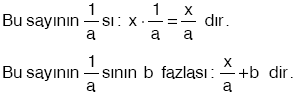

D. YAŞ PROBLEMLERİ
Bir kişinin yaşı x ise,
- T yıl önceki yaşı : x – TT yıl sonraki yaşı : x + T olur.
- Kişiler arasındaki yaş farkı her zaman aynıdır.
- İki kişinin yaşları oranı yıllara göre orantılı değildir.
- İki kişinin yaşları toplamı T yıl sonra 2 × T artar.
- n kişinin yaşları toplamı T yıl sonra n × T artar.
E. İŞÇİ – HAVUZ PROBLEMLERİ
Bir işi;
A işçisi tek başına a saatte,
B işçisi tek başına b saatte,
C işçisi tek başına c saatte
yapabiliyorsa;
- A işçisi 1 saatte işin 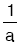 sını bitirir.
- A ile B birlikte t saatte işin 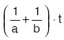 sini bitirir.
- A, B, C birlikte t saatte işin 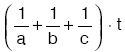 sini bitirir.
Eğer üçü t saatte işi bitirmiş ise bu ifade 1 e eşittir.
- A işçisi x saat, B işçisi y saat C işçisi z saat çalışarak işi bitiriyorsa, 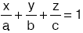 dir.
| Havuz problemleri işçi problemleri gibi çözülür. | |
| A musluğu havuzun tamamını a saatte doldurabiliyor.Tabanda bulunan B musluğu dolu havuzun tamamını tek başına b saatte boşaltabiliyor olsun.
Bu iki musluk birlikte bu havuzun t saatte 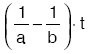sini doldurur. |
- A musluğu havuzun tamamını a saatte doldurabiliyor. Tabanda bulunan B musluğu dolu havuzun tamamını tek başına b saatte boşaltabiliyor ise, bu iki musluk aynı anda açıldığında bu havuzun dolması için b > a olmalıdır.
F. HAREKET PROBLEMLERİ
v : Hareketlinin hızı
x : Hareketlinin v hızıyla t sürede aldığı yol
t : Hareketlinin v hızıyla x yolunu alma süresi ise,
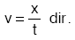
- Aralarında x km olan iki araç saatte v1 km ve v2 km hızla aynı anda birbirine doğru hareket ederlerse karşılaşma süresi 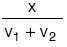 olur.
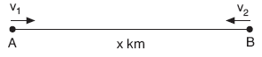
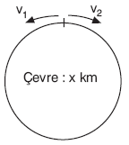
İki araç saatte v1 km ve v2 km hızla aynı anda çembersel bir pistin, aynı noktasından zıt yönde aynı anda hareket ederlerse karşılaşma süresi,
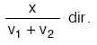
- Aralarında x km olan iki araç saatte v1 km ve v2 km hızla aynı anda aynı yönde hareket ederlerse arkadaki aracın (v1 hızlı araç) öndekini yakalama süresi 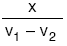dir.
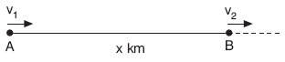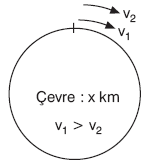
İki araç saatte v1 km ve v2 km hızla aynı anda çembersel bir pistin, aynı noktasından aynı yönde hareket ederse hızı büyük olan aracın hızı küçük olan aracı yakalama süresi,
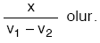
 |
- Eşit zamanda v1 ve v2 hızlarıyla alınan yolda hareketlinin ortalama hızı, 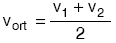 dir.
- Belirli bir yolu v1 hızıyla gidip v2 hızıyla dönen bir aracın ortalama hızı, 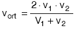 dir.
G. YÜZDE PROBLEMLERİ
A sayısının % a sı: 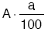 olur.
- A nın % a sı ile B nin % b sinin toplamı:

- A ya A nın % a sı eklenirse: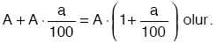
- A dan A nın % a sı çıkarılırsa: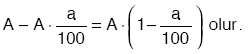
H. FAİZ PROBLEMLERİ
F : Faiz miktarı
A : Anapara (Kapital)
n : Yıllık faiz oranı
t : Kapitalin faizde kalma süresi olmak üzere,
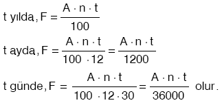
| Faize yatırılan para her yıl getirdiği faiz ile birlikte tekrar faize yatırılırsa elde edilen toplam faize bileşik faizdenir.Buna göre, A lira yıllık bileşik faiz oranı % n olan bir bankaya yatırılıyor. t yıl sonra
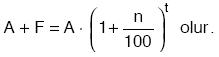 |
I. KARIŞIM PROBLEMLERİ
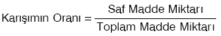
| 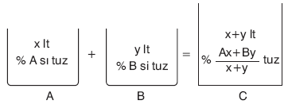A kabında, tuz oranı % A olan x litrelik tuzlu su çözeltisi ile B kabında tuz oranı % B olan y litrelik tuzlu su çözeltisi, boş olan C kabında karış-tırılırsa oluşan x + y litrelik karışımın tuz oranı
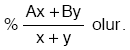 |
|
| Tuz oranı % A olan tuzlu su çözeltisinin su oranı % (100 – A) dır. |